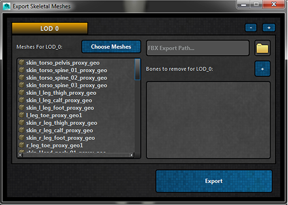
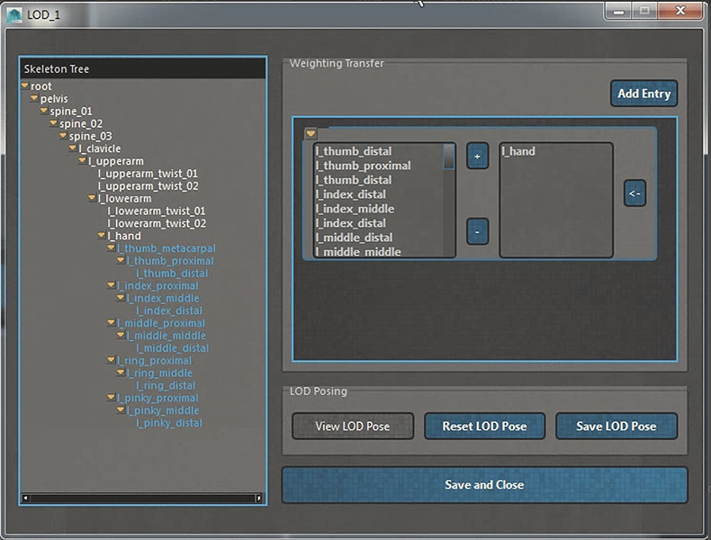
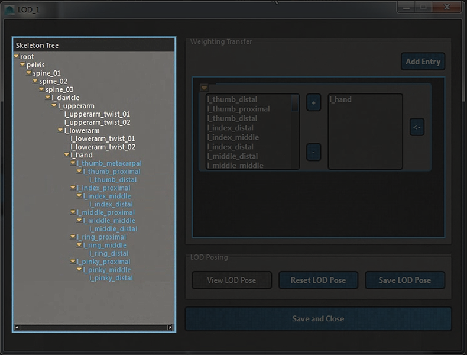
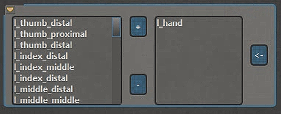
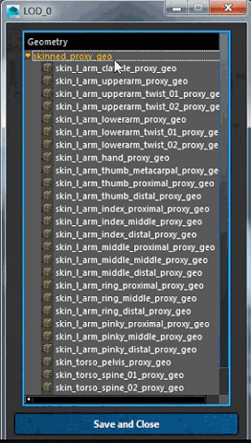
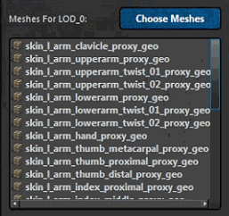
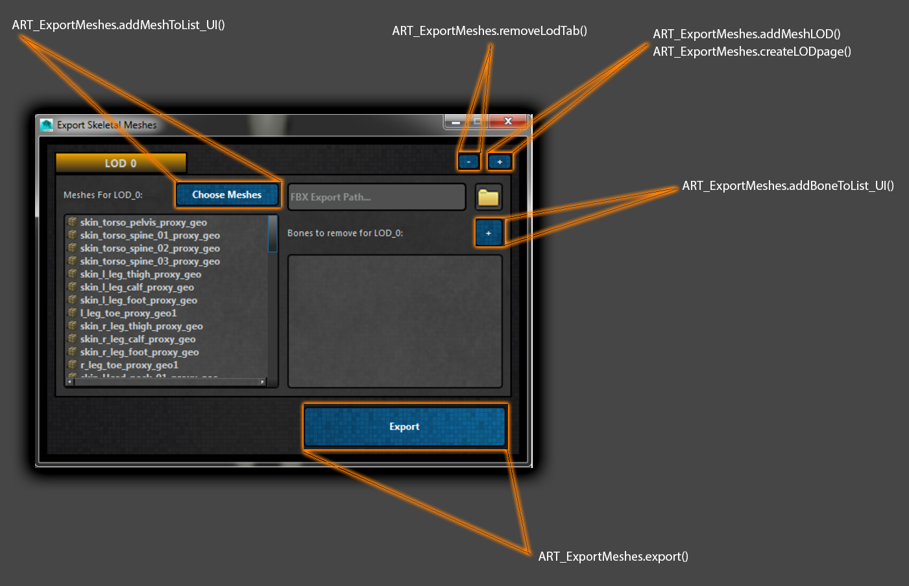

ART_ExportMeshes¶
Author: Jeremy Ernst
-
class
Interfaces.ART_ExportMeshes.ART_ExportMeshes(mainUI, parent=None)[source]¶ This class is used to export skeletal meshes and skeletal mesh LODs.
The UI has a robust suite of tools for managing LODs, bone removal for LODs, choosing which meshes are associated with a LOD, where weighting from removed bones will get transferred, and setting/viewing LOD poses (useful if you wanted to remove finger bones for a LOD, but not have “paddle hands”
A look at the LOD tools for transferring weighting and managing LOD poses:
-
__init__(mainUI, parent=None)[source]¶ Instantiates the class, getting the QSettings, presenting a QMessageBox about saving the current file, creates a temporary file to do the export work out of (stripping out the rig and removing all connections from joints), set the model pose, then calls on the UI build.
Parameters: mainUI – Instance of the Rig Creator interface, from which this class was called. See also
ART_ExportMeshes.buildUI(), ART_ExportMeshes.populateUI()
-
addBoneToListUI_addChildren(name, parent)[source]¶ Populates the Skeleton Tree (self.tree) by recursively looking for relatives of the given name and making more QTreeWidgetItems using the passed in name, and parenting under the passed in parent.
Parameters: - name – The bone name, which will be used to look for children, and also as the text for the treeWidgetItem
- parent – The parent treeWidgetItem that the created item will be a child of.
-
addBoneToList_Accept(tree, listWidget, lod, layout, viewBtn)[source]¶ Called from the “Save and Close” button of the addBoneToList_UI, clears all items in the main listWidget, then populates that listWidget with the new bones to remove. Adds all LOD pose info to the character node as well as weighting transfer info for that lod.
Parameters: - listWidget – The listWidget on the main LOD page on the bottom right that lists bones to remove.
- lod – The LOD text (LOD_#) to operate on.
- layout – The QVboxLayout to query for weighting transfer entries.
- viewBtn – The “View LOD Pose” button instance
-
addBoneToList_UI(parent, label, listWidget)[source]¶ Creates an interface to remove bones from a LOD, transfer weighting of those removed bones to the next viable parent, and handle LOD posing.
Parameters: - parent – The instance of the main UI created by ART_ExportMeshes.buildUI()
- label – The label for the window title to show what LOD this interface represents.
- listWidget – The list widget on the main LOD page that lists all bones being removed.
See also
ART_ExportMeshes.addBoneToList_Accept(), ART_ExportMeshes.addWeightingTransferEntry()
See also
ART_ExportMeshes.viewLodPose(), ART_ExportMeshes.resetLodPose(), ART_ExportMeshes.resetLodPose()
-
addItemsToWeightXferList(widget, boneWidget)[source]¶ Takes the items selected in the skeleton tree (pictured below) and auto-selects and children under the selected items, as removing the parent will also remove the children of those parents, and then adds all of those items to the given widget.
Parameters: - widget – The QListWidget in the weighting transfer entry widget showing bones to remove.
- boneWidget –
The QListWidget in the weighting transfer entry widget showing bone who will receive weights from removed bones.

See also
ART_ExportMeshes.addXferBoneToList()
-
addMeshLOD()[source]¶ Finds the current number of LOD tabs, constructs a label for the new tab, iterating the count by 1, and calls on createLODpage, passing in that label.
See also
ART_ExportMeshes.createLODpage()
-
addMeshToList_UI(parent, label, listWidget)[source]¶ Creates a UI that lists all meshes for selection to assign meshes to a given LOD.
Parameters: - parent – The UI instance to parent this interface to
- label – The LOD text label for this interface’s window title.
- listWidget –
The listWidget on the main LOD page that will list the selected meshes

See also
ART_ExportMeshes.populateRenderMeshes(), ART_ExportMeshes.addMeshesToLodList()
-
addMeshesToLodList(listWidget, meshTree, mainWin, label)[source]¶ Finds the selected items in addMeshToList_UI’s treeWidget, and adds them back to the main LOD page’s listWidget for meshes associated with that LOD.
Parameters: - listWidget – The list widget to add selected items in the treeWidget to.
- meshTree – The treeWidget from addMeshToList_UI(), whose selection will be queried.
- mainWin – The window instance from addMeshToList_UI()
- label – The name of the LOD tab
See also
ART_ExportMeshes.saveMeshList()
-
addWeightingTransferEntry(layout)[source]¶ Adds a Groupbox with two QListWidgets, where the left shows bones to remove, and the right shows the next viable parent bone to transfer the weighting to. Both lists can then be edited as well.
This is what that would like like:
Parameters: layout – The QVboxLayout to add the QGroupbox to. Returns: returns both QListWidgets (in memory) See also
ART_ExportMeshes.addItemsToWeightXferList(), ART_ExportMeshes.removeBonesFromList()
-
addXferBoneToList(widget, autoFind=True)[source]¶ Finds the selected items in the Skeleton Tree (for removal) and locates the next viable parent to transfer weighting to, then adds that bone to the passed in QListWidget.
Parameters: - widget – The QListWidget to add the bone that will receive weights from removed bones.
- autoFind – Whether or not to auto-locate the next viable parent or use the currently selected item.
-
browseToFBX(lineEdit)[source]¶ Calls on a fileDialog for the user to browse to an FBX file for saving. Either one that exists, or creating a new one.
Parameters: lineEdit – The QLineEdit whose text to set with the path to the FBX file.
-
buildUI()[source]¶ Builds the main interface for the tool, which allows additions of LODs, assignment of meshes to a given LOD, and assignment of bones to remove per LOD (which then opens another interface/tool).
See also
ART_ExportMeshes.addBoneToList_UI(), ART_ExportMeshes.addMeshToList_UI()
See also
ART_ExportMeshes.addMeshLOD(), ART_ExportMeshes.createLODpage()
See also
ART_ExportMeshes.createExportMeshesPage(), ART_ExportMeshes.removeLodTab()
See also
ART_ExportMeshes.export()
Here is a breakdown image showing which UI elements call on which functions:

-
closeWin(event)[source]¶ Gathers all information from the temp file (LOD meshes, bones to remove, etc), opens the export file, and applies that information to the network node in the export file. Lastly removes the temp file.
-
collapseBox(groupBox, *args)[source]¶ Collapses the given groupBox down to 16 pixel high, or restores its original height, given the state.
Parameters: - groupBox – Which groupBox to operate on and manipulate the height.
- args – What the state is of the groupBox checkBox.
-
createExportMeshesPage()[source]¶ Creates the LOD0 Tab, which is a little bit unique from subsequent LOD tabs, as the Add/Remove LOD buttons are added, and the LOD0 tab can not be removed. It still calls on createLODpage to create the common elements, but this creates the framework for all of the LOD tabs.
See also
ART_ExportMeshes.createLODpage()
-
createLODpage(label, closeable)[source]¶ Creates a tab (QFrame) for a new LOD, with the UI elements to set the output path for the FBX, to set the meshes assigned to the LOD, and to launch the bone removal tool for the LOD.
Parameters: - label – The text label for the tab (LOD_#)
- closeable – Whether this LOD can be removed, thus removing the tab.
-
export()[source]¶ Gathers all export data by calling on utils.findExportMeshData, parses the information, and for each LOD in the list, calls on utils.ExportMesh(), passing in the appropriate data.
See also
utils.ExportMesh(), utils.findExportMeshData()
-
findTreeChildren(fullList, itemList, item)[source]¶ Finds any child items from selected items in the Skeleton Tree and appends them to the input lists.
Parameters: - fullList – The full list of all items, including the original selected parent items and any child items
- itemList – The instances in memory of the selected items in the Skeleton Tree.
- item – The parent item in the Skeleton Tree to check for children
See also
ART_ExportMeshes.addItemsToWeightXferList()
-
lodContextMenu(widget, groupBox, point)[source]¶ Creates a right-click context menu for the weighting transfer entry widget:
Parameters: - widget – The parent widget the context menu will spawn from.
- groupBox – The parent groupBox for the weighting transfer entry.
- point – Where on the parent widget to spawn the context menu.
-
populateRenderMeshes(tree)[source]¶ Finds all skinned meshes in the scene and adds them as items to the given TreeWidget.
Parameters: tree – The QTreeWidget to add found meshes to
-
populateUI()[source]¶ Checks to see if LOD attributes exist on the character node, and if so, builds and populates the UI based on those settings.
-
removeBonesFromList(widget)[source]¶ Takes the selected items from the left QListWidget in a weighting transfer widget and attempts to remove them from the list.
Parameters: widget – The QListWidget to check for selected items in.
-
removeLodTab()[source]¶ Removes the current tab index from the tabWidget. Also removes and LOD attributes associated with this LOD from the character node.
-
removeTransferEntry(groupBox)[source]¶ Removes the given groupBox, deleting a weighting transfer entry.
Parameters: groupBox – Which groupBox to remove.
-
resetLodPose(lod)[source]¶ Resets the LOD pose for the given LOD to the model pose.
Parameters: lod – the LOD text label to operate on.
-
saveFilePath(lineEdit, tabText, *args)[source]¶ Gathers the FBX output path for the LOD and stores that information to the character node.
Parameters: - lineEdit – The QLineEdit which stores the output path text.
- tabText – The LOD text to operate on (LOD_#)
-
saveLodPose(lod)[source]¶ Queries the joints in the skeleton and get the attribute values to store for the given lod.
Parameters: lod – the text label of the LOD to operate on. Todo
Suggested feature request was to have this operate on the rig controls and not just joints. That would mean storing both controls and joints. The desire behind this was to do all LOD posing in the rig file, rather than the temp file that gets created for exporting.
-
saveMeshList(listWidget, tabText)[source]¶ Gathers the associated meshes for an LOD and stores that information to the character node.
Parameters: - listWidget – The QListWidget of the LOD tab to search for associated meshes.
- tabText – The LOD text to operate on (LOD_#)
-
viewLodPose(lod, button)[source]¶ Gather LOD pose attribute data for the given LOD and set those values on the joints.
Parameters: - lod – The text label for the LOD to operate on.
- button – the “View LOD Pose” button instance
Todo
Suggested feature request was to have this operate on the rig controls and not just joints. That would mean getting data for both controls and joints. The desire behind this was to do all LOD posing in the rig file, rather than the temp file that gets created for exporting.
-